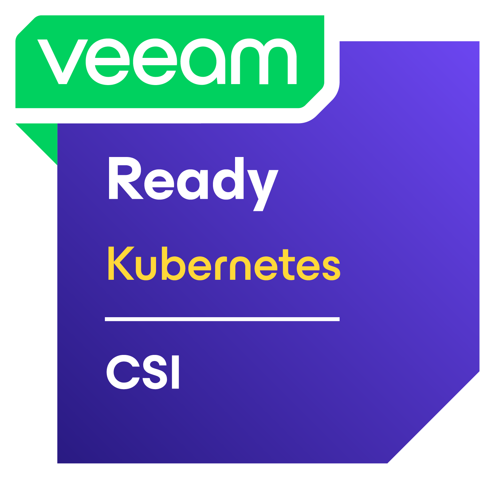

Overview¶

Veeam Kasten is a data management platform designed to run natively on Kubernetes to protect applications. Kasten integrates seamlessly with the HPE CSI Driver for Kubernetes thanks to the native support for CSI VolumeSnapshots and VolumeSnapshotClasses.
HPE CSI Driver for Kubernetes is on the Veeam Alliance Partner Technical Programs designated as Veeam Ready.
- View HPE CSI Driver for Kubernetes in the Veeam Ready database.
Tip
All the steps below are captured in a tutorial available on YouTube and in the SCOD Video Gallery.
Prerequisites¶
The cluster needs to be running Kubernetes 1.25 or later and have the CSI snapshot CustomResourceDefinitions (CRDs) and the CSI snapshot-controller deployed. Follow the guides available on SCOD to:
Note
The rest of this guide assumes a default VolumeSnapshotClass and VolumeSnapshots are functional on the cluster.
Annotate the VolumeSnapshotClass¶
In order to allow Kasten to perform snapshots and restores using the VolumeSnapshotClass, it needs an annotation.
Assuming we have a default VolumeSnapshotClass named "hpe-snapshot":
kubectl annotate volumesnapshotclass hpe-snapshot k10.kasten.io/is-snapshot-class=true
Installing Kasten¶
Kasten installs in its own namespace using a Helm chart. It also assumes there's a performant default StorageClass on the cluster to serve the various PersistentVolumeClaims needed for the controllers.
Note
Above links are external to docs.kasten.io.
Snapshots and restores¶
Kasten provides the user with a graphical interface and dashboard to schedule and perform data management operations. There's also an API that can be manipulated with kubectl using CRDs.
To perform snapshot and restore operations through Kasten using the HPE CSI Driver for Kubernetes, please refer to the Kasten documentation.
Note
Above links are external to docs.kasten.io.